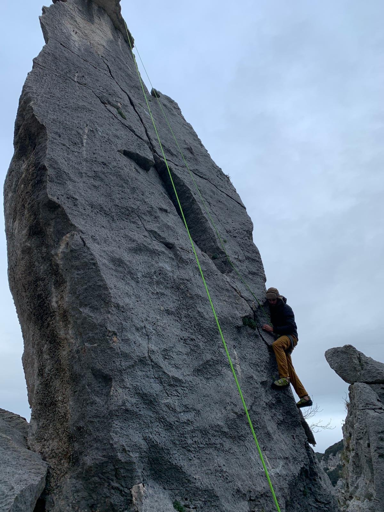

Top rope is dope. There's risk with any kind of climbing of corse. Gear can fail, you can fall and swing into a wall, or your belay partner might just be a kill you but all things considered this is probably safer than playing a game of soccer. The main downside with top rope is that you need to be at the top of the route to set the anchor. Sometimes it's possible to hike to the top, set the anchor then repel down, but this is kind of annoying. More common is to have a more experienced climber lead the route and set the anchor. This is a good way to start getting familiar with climbing outdoors but eventually you should learn how to lead so you can take other people climbing.
Top rope is also nice when you're projecting a hard route. It's nice not to have to worry about all the safety concerns and just focus on climbing. However, most people don't count a route as climbed until they can lead it without falling. That being said you're the only one who is counting your routes so you can do it however you'd like :).
The payoff here is the same as with sport climbing although maybe a little less so since you don't have to deal with so much fear. Still it's always a good time to get outdoors and do some climbing and the view from the top is bound to be grogous. Here's a nice picture of me climbing a rock formation in Italy. At the top of the route was a little book where you could sign you name and write a message or joke to future climbers. I've replicated the notebook below. Feel free to sign if you've climbed it, or even if you haven't, it's all good my friend.
Type your name climbed this route!!!
Back to Homepage